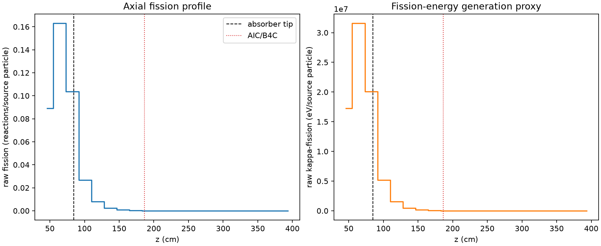
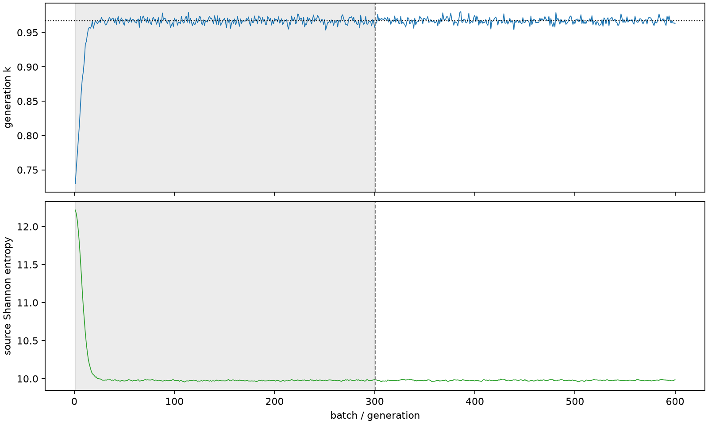

| field | value |
|---|---|
| experiment | V2-STAGE_256_OGRENCI_01-0022 |
| k | 0.9671813508345212 |
| MC standard error | 0.00018731519008527477 |
| seconds | 966.4109505219967 |
| acceptance | not_assessed |
| convergence | review_required |
Completed is output integrity only; physical and statistical review required. Zero tallies do not prove zero production or zero uncertainty.
| diagnostic | value |
|---|---|
| geometric fuel voxels | 5280 |
| zero fission tally voxels | 1853 |
| low signal fuel voxels | 2992 |
| low signal fission share | 9.847330466383582e-05 |
| low signal kappa share | 9.852319277801623e-05 |
| important fission share | 0.9502267288626859 |
| previous filter included | 2288 |
| duration estimate s | 1562.5173488400023 |
| actual minus estimate s | -596.1063983180056 |
| fission relative MC error | statistics |
|---|---|
| all_geometric_fuel | {"voxels": 5280, "positive_mean_voxels": 3427, "zero_mean_voxels": 1853, "undefined_relative_error_voxels": 1853, "median": 0.054363393974873477, "p95": 1.0, "maximum": 1.0000000000000002} |
| low_signal | {"voxels": 2992, "positive_mean_voxels": 1139, "zero_mean_voxels": 1853, "undefined_relative_error_voxels": 1853, "median": 0.5930533648367524, "p95": 1.0, "maximum": 1.0000000000000002} |
| important_95pct | {"voxels": 965, "positive_mean_voxels": 965, "zero_mean_voxels": 0, "undefined_relative_error_voxels": 0, "median": 0.004898035354551609, "p95": 0.009348532731765159, "maximum": 0.010033197788817701} |
| outside_previous_filter | {"voxels": 2992, "positive_mean_voxels": 1139, "zero_mean_voxels": 1853, "undefined_relative_error_voxels": 1853, "median": 0.5930533648367524, "p95": 1.0, "maximum": 1.0000000000000002} |
| kappa_fission relative MC error | statistics |
|---|---|
| all_geometric_fuel | {"voxels": 5280, "positive_mean_voxels": 3427, "zero_mean_voxels": 1853, "undefined_relative_error_voxels": 1853, "median": 0.05427933738086017, "p95": 1.0, "maximum": 1.0000000000000002} |
| low_signal | {"voxels": 2992, "positive_mean_voxels": 1139, "zero_mean_voxels": 1853, "undefined_relative_error_voxels": 1853, "median": 0.5912660142270867, "p95": 1.0, "maximum": 1.0000000000000002} |
| important_95pct | {"voxels": 965, "positive_mean_voxels": 965, "zero_mean_voxels": 0, "undefined_relative_error_voxels": 0, "median": 0.004892021885244283, "p95": 0.00933358011895555, "maximum": 0.010016039162434001} |
| outside_previous_filter | {"voxels": 2992, "positive_mean_voxels": 1139, "zero_mean_voxels": 1853, "undefined_relative_error_voxels": 1853, "median": 0.5912660142270867, "p95": 1.0, "maximum": 1.0000000000000002} |
| axial bin | fission share | kappa-fission share |
|---|---|---|
| 1 | 0.22634478466495878 | 0.22634051096815644 |
| 2 | 0.4134377997293246 | 0.4134065024855582 |
| 3 | 0.26284472983741247 | 0.262848247105402 |
| 4 | 0.0679095365466311 | 0.06793157982695538 |
| 5 | 0.02056129938811803 | 0.020568125049421557 |
| 6 | 0.00625559713590506 | 0.0062578386536335994 |
| 7 | 0.001888423111139232 | 0.0018890723228648894 |
| 8 | 0.0005636753802533432 | 0.0005638706477974774 |
| 9 | 0.00014517548648428606 | 0.00014524325192553293 |
| 10 | 3.6771782219094894e-05 | 3.6792445804604715e-05 |
| 11 | 8.494965832185071e-06 | 8.501459067670483e-06 |
| 12 | 3.0783534818558672e-06 | 3.080841764423364e-06 |
| 13 | 4.113683389838153e-07 | 4.1222010359805076e-07 |
| 14 | 2.1674184922833221e-07 | 2.1719227076473822e-07 |
| 15 | 5.5080518007829186e-09 | 5.529273809408747e-09 |
| 16 | 0.0 | 0.0 |
| 17 | 0.0 | 0.0 |
| 18 | 0.0 | 0.0 |
| 19 | 0.0 | 0.0 |
| 20 | 0.0 | 0.0 |
Histories include the inactive-to-active transition at batch 300. kappa-fission approximates fission energy production, not total heat deposition.

